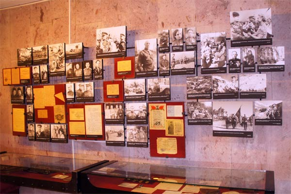

Продолжает рассказ о событиях Курской битвы Зал освобождения г. Белгорода. В первый раз город был освобожден 9 февраля 1943 года. Второе освобождение Белгорода было 5 августа 1943 года в ходе Белгородско-харьковской наступательной операции «Полководец Румянцев».
В экспозиции представлены комплексы о командующем Степным фронтом И.С. Коневе, о 89 гвардейской и 305 стрелковых дивизиях, 23-м гвардейском авиационном полке дальнего действия, получивших Почетное наименование «Белгородских», а так же о других частях и соединениях, отличившихся на завершающем этапе Курской битвы.

В экспозиции представлены уникальные награды, документы, фотографии фронтовых фотокорреспондентов А. Егорова, Г. Капустянского Г. Санько.
Выставочный комплекс посвящен летчикам - истребителям, штурмовикам, бомбардировщикам, разведчикам, добывавшим победу в небе огненных сражений Курской дуги.
Битва под Курском характерна массовым проявлением героизма и боевой отваги советских авиаторов. В ожесточенных воздушных боях и сражениях наши летчики смело вступали в бой с врагом, навязывали ему свою волю и, как правило, выходили победителями. В этой битве особенно отличились летчики-герои А.К. Горовец, Н.И. Варчук, А.В. Ворожейкин, А.С. Куманичкин, М.С. Малов, М.П. Одинцов, Б.В. Панин и другие - всего 45 человек, кто получил звание Героя Советского Союза за бои на Белгородском направлении в Курской битве.
...5 августа город Белгород был окружен и атакован с трех сторон. Части 69 армии наступали с севера и запада, части 7 гвардейской армии наступали с востока. К 18 часам город был полностью очищен от немецких войск. В тот же день, 5 августа, после ожесточённых боёв, был освобождён и город Орёл.
В честь освобождения городов Белгород и Орел 5 августа 1943 г. над вечерней Москвой был произведен 12 артиллерийскими залпами из 120 орудий первый салют Родины. В центре зала фотопанно первого салюта с фамилиями Героев Советского Союза, получивших это высокое звание за бои на Курской дуге (Белгородское направление).
О накале боев на Курской дуге напоминает расплавленный двигатель танка, найденный на Прохоровском поле.
Музей является хранителем военной истории города. В 2007 г. состоялась передача на постоянное хранение в фонды музея ордена Отечественной войны I степени, которым 9 апреля 1980 г. был награжден г. Белгород за мужество и стойкость, проявленные белгородцами в годы Великой Отечественной войны, за успехи в хозяйственной и культурной жизни, а так же грамотой от 27 апреля 2007 г. Президента РФ о присвоении Белгороду почетного звания «Город воинской славы».